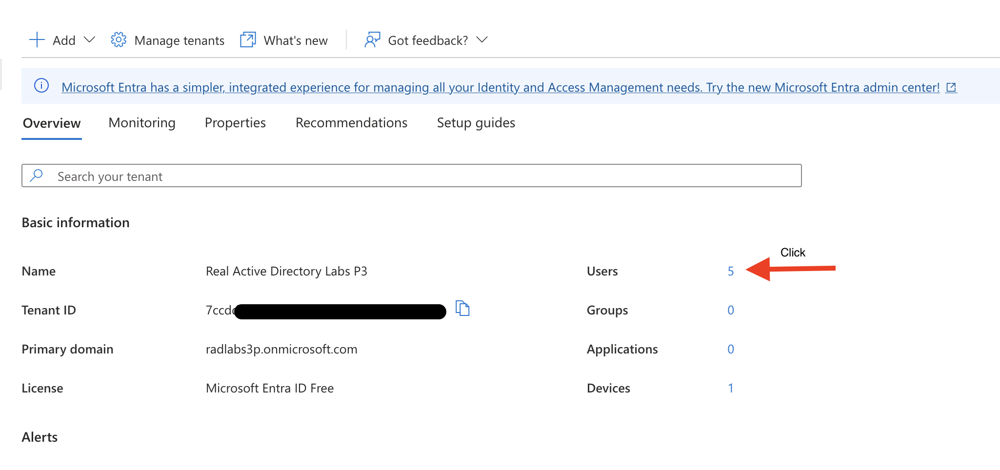

Why this project
Most identity write-ups stop at account creation, but that's the smallest part of what an admin actually does. A user's account has a full lifecycle — created, updated as their role changes, and locked out of active sessions the moment something looks wrong. This project walks those stages against test accounts in Microsoft Entra ID (formerly Azure Active Directory), treating session revocation with the same care as creation, since in a real environment that's usually the higher-stakes operation.
Getting to Microsoft Entra ID
Search for Microsoft Entra ID
Typed microsoft entra id into the Azure Portal's global search bar and selected the service from the results rather than navigating a menu tree — the fastest route to any Azure service once its name is known, and worth building as a habit over memorizing where every blade lives in the left-hand navigation.

Confirm the tenant and check the current user count
Landed on the tenant's Overview page — Real Active Directory Labs P3 — and clicked the Users tile to see what already existed before creating anything. Five accounts were already present in this training tenant. Checking the baseline before adding anything is the same instinct as confirming a security group's default rules before touching them elsewhere in this portfolio: know what's already there before changing it, so it's possible to say with certainty afterward exactly what this project added.

Creating three user accounts
Three accounts were created for this lab — rp.one, rp.two, and rp.three — so that account modification and session revocation could each be demonstrated against a distinct account without one operation interfering with evidence needed for another.
Add → User → Create new user
From the Users blade, the + Add dropdown offers both Create new user (an account native to this tenant) and Invite external user (a B2B guest, authenticated against their own home tenant). This project uses the former since the goal is managing internal-style accounts through their full lifecycle, not federated guest access.

rp.one
User principal name rp.one, display name RP One, password left on auto-generate. Auto-generating the password here rather than typing one is deliberate — it guarantees the initial credential is random and unknown to anyone but whoever reads it off this one-time screen, which is the same principle behind forcing a reset on first sign-in.

rp.two
Same process repeated for rp.two / RP Two.

rp.three
And again for rp.three / RP Three, rounding out the three test accounts used across this project.

Confirm all three accounts in the Users list
The Users blade now shows eight accounts total — the five that existed before this project plus RP One, RP Three, and RP Two. The list needed a manual refresh before the new accounts appeared, a small reminder that directory writes in a distributed identity service aren't always instantly consistent across every view.

Result: three new Member accounts created in the tenant, each verified present in the Users list before moving on to modifying one of them.
Updating RP One's profile
Open RP One's Overview page
Clicking into an account from the Users list lands on its Overview page — basic info, group memberships, assigned roles and licenses, and quick actions, all in one place. This is also where an admin would see at a glance whether the account is enabled, whether it has any assigned roles, and how it was created (native vs. invited).

Edit properties
The Edit properties action opens a tabbed form — Identity, Job Information, Contact Information, Parental controls, Settings, On-premises — scoped to only the fields that can actually be changed here, with a note that this view doesn't show every property Entra ID stores, only the ones exposed for editing through the Portal.

Set first and last name on the Identity tab
Display name was already set at creation time (RP One), but the underlying First name and Last name fields were still blank — they're separate attributes from Display name, and plenty of downstream systems (mail merge, directory exports, HR integrations) read the split fields specifically, not just the combined display string.

Set job title and department
Job title set to Helpdesk Technician, department to IT Helpdesk. These attributes aren't just descriptive metadata — in a real tenant they're commonly read by Conditional Access policies, dynamic group membership rules, and access reviews, so an account's job information can directly influence what it's allowed to touch.

Job title, department, and manager would typically sync in from an authoritative HR system rather than being typed by hand into the directory — keeping identity attributes in one source of truth instead of letting them drift out of sync across systems.
Result: RP One's profile updated with a proper first/last name split and accurate job information, saved and persisted back to the directory.
Resetting RP One's password
Open Reset password from the toolbar
Password reset lives as its own top-level action, separate from Edit properties — a deliberate separation in the Portal's design, since resetting a credential is a materially different kind of operation (and a different blast radius if done to the wrong account) than editing descriptive attributes.

Confirm the reset
A confirmation pane names the exact account affected — rp.one@radlabs3p.onmicrosoft.com — and explains up front that the resulting password is temporary and must be changed at the user's next sign-in. Surfacing that constraint before the action is taken, rather than after, is a small but deliberate bit of UX: it removes any ambiguity about whether this reset is meant to be a permanent credential.

Record the temporary password
The reset succeeds and displays a one-time temporary password that has to be captured now — it isn't retrievable again after this pane closes. In a real handoff, this is the value that would get relayed to the actual user through a separate, already-verified channel, not left sitting in a ticket or a chat log.

A temporary credential like this would be relayed to the actual user through a channel already verified to be them — never pasted into a shared ticket, chat thread, or email — and self-service password reset with MFA would handle most resets without an admin touching a credential at all.
Result: RP One's password reset, with the account flagged to force a change on next sign-in — the standard pattern for handing a credential to someone else without ever knowing their real, permanent password.
Revoking active sessions
Revoke sessions for RP One
Separate again from both Edit properties and Reset password: Revoke sessions invalidates a user's existing refresh tokens, forcing every device and app they're currently signed into to re-authenticate. This is the action that actually matters in an active-incident scenario — resetting a password alone doesn't disconnect a session that's already authenticated, but revoking sessions does, immediately.

Session revocation would be one step in a broader incident-response runbook — paired with reviewing sign-in logs for the account, checking for any mailbox rules or OAuth grants an attacker may have added, and rotating any credentials the account had access to, not treated as a standalone fix on its own.
Result: every active session for RP One invalidated on confirmation — the account itself still exists and can sign back in, but only after authenticating fresh.
What this demonstrates
- Account creation is one stage of a longer lifecycle — this project deliberately covered modification and session revocation with the same attention, since those are operations with real-world stakes that go beyond initial provisioning.
- Password reset and session revocation are two distinct actions that solve two distinct problems: resetting a credential doesn't disconnect an already-authenticated session, and revoking sessions doesn't rotate a compromised password. A real incident response typically needs both.
- Directory attributes like job title and department aren't cosmetic — they're frequently read by access policies and group rules elsewhere in a real tenant, which is why getting them right matters beyond just filling in a form.
This project was conducted in a controlled sandbox environment. Real-world/production results and practices would differ — noted inline where relevant above.